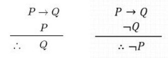

Introduccion
Las reglas de inferencia son principios lógicos que permiten derivar conclusiones válidas a partir de un conjunto de premisas(proposiciones). Una premisa es una proposición que se asume como verdadera desde el inicio de un razonamiento lógico. A partir de estas premisas se aplican reglas formales con el fin de obtener una nueva proposición, denominada conclusión, que es la que se desea demostrar. Este proceso se conoce como una derivación lógica a partir de premisas.
Las reglas de inferencia se utilizan tanto en la lógica proposicional como en la lógica matemática para construir argumentos válidos. Dado que las premisas se consideran verdaderas desde el inicio, si las reglas de inferencia se aplican correctamente, la conclusión obtenida también será verdadera en el sentido lógico.
Un argumento es una secuencia de proposiciones, generalmente representadas como p1,p2,p3,…,pn, a partir de las cuales se deriva una conclusión (q). El símbolo ∴ se lee “por lo tanto” y se utiliza para indicar el paso hacia la conclusión (∴ q).
Sin embargo, es importante destacar que un argumento no afirma que la conclusión sea verdadera en la realidad, sino que establece que, si las premisas son verdaderas, entonces la conclusión también debe serlo. Por esta razón, se dice que un argumento es válido por su forma lógica y no por el contenido de sus proposiciones.
Reglas de inferencia y Tabla guia


-Modus Ponens
Como se muestra en la tabla, la estructura de la regla cuenta con p->q y además con p, eso quiere decir que como premisas tenemos esas dos proposiciones. Siendo que las premisas (p->q) y (p) son verdaderas el resultante es q que también debe ser verdadera, caso contrario si (q) fuese falsa, (p->q) también seria falsa. Para este caso es fácil comprobar dado que se maneja con la tabla de verdad de la implicación. Otro caso puede ser que (p->q) y (–q) como premisas el resultante o conclusión será –p, esto sucede nuevamente por la propiedad de la implicación.
Ejemplos
CONTENIDO DE LOS EJEMPLOS
Ejercicio interactivo
CONTENUDO DE LOS EJERICIOS COMO ORACIONES Y UN EJERICIO DEL CODIGO EN MATLAB
Te mostramos el codigo ejecutable. Utilizamos la plataforma de Matlab para presentarte el siguiente codigo que fue utilizado para la representacion de tablas de inferencia y su respectivo analisis
Video
LINK DEL VIDEO CON UN ICONO DE YOUTUBE O COLOCAR EL VIDEO DIRECTO EN LA PAGINA